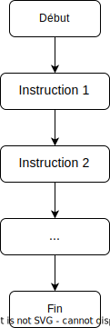
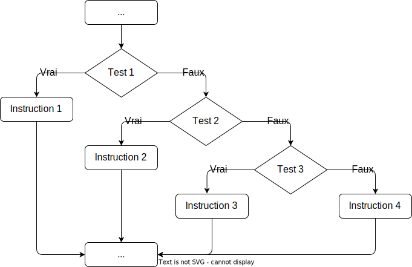

Les bases de Python (cours)
1. Introduction⚓︎
Python est un langage de programmation, il s'agit donc d'un ensemble d'instructions qui va nous permettre d'écrire des programmes informatiques.
Un programme est une suite d'instructions données à un ordinateur afin qu'il effectue une tâche déterminée.
Nous prendrons garde à différencier les termes programme et algorithme. Observons pour cela les définitions données dans l'encyclopédie Wikipedia :
- algorithme
-
Un algorithme est une suite finie et non ambiguë d'instructions et d'opérations permettant de résoudre un type de problèmes.
- programme informatique
-
Un programme informatique est un ensemble d'instructions et d'opérations destinées à être exécutées par un ordinateur.
Un algorithme ne relève donc pas a priori du domaine de l'informatique. Cependant, la plupart des programmes informatiques sont la traduction d'un algorithme dans un certain langage de programmation.
Remarquons enfin que le mote algorithme vient d'Al-Khwârizmî (en arabe : الخوارزمي), nom d'un mathématicien persan du IXe siècle.
Il existe de nombreux langages de programmation et, même en utilisant un même langage, un algorithme peut être programmé de différentes façons. Un algorithme donné peut donc correspondre à de très nombreux programmes informatiques différents.
Cependant, un ordinateur n'est qu'une machine électrique qui ne peut comprendre directement que des suites d'instructions exprimées en langage machine par des suites de 0 et de 1. Le rôle d'un langage de programmation est de fournir au programmeur une syntaxe et une grammaire pour lui permettre d'exprimer des instructions de manière plus facilement compréhensible pour un être humain. Ce programme est ensuite traduit en langage machine, puis exécuté.
Cette traduction est faite, suivant les langages, par un compilateur (programme qui crée un fichier exécutable à partir du code source) ou par un interpréteur (programme qui lit, traduit et exécute immédiatement une à une les instructions du code source).
En NSI, nous allons nous focaliser sur le langage Python.

Le langage Python a été créé en 1989 par l'informaticien néerlandais Guido van Rossum qui l'a nommé ainsi en hommage à la série télévisée des Monty Python dont il était fan.

Pour installer et utiliser Python voir cette page.
2. Variables et affectation⚓︎
Dans un programme, on utilise des variables pour stocker des données.
Une variable est déterminée par un nom de variable que l'on peut choisir librement. Il est néanmoins conseillé de choisir un nom court et auto-descriptif afin de comprendre à la lecture le rôle de cette variable.
Un nom de variable ne peut pas commencer par un chiffre et ne doit pas contenir de caractères spéciaux autres que "_" ou d'espace.
Il est conseillé d'utiliser plutôt des lettres minuscules, en séparant les mots par le caractère ”_” ou en utilisant des majuscules à l'intérieur du nom. Une variable prévue pour contenir un prix de revient pourra par exemple être nommée prix_de_revient ou prixDeRevient. Des recommendations précises de style de programmation Python sont rassemblées à cette adresse : https://peps.python.org/pep-0008/.
À retenir
Pour affecter une valeur à une variable, on utilise simplement le signe ”=”.
L'instruction pi = 3.14 a pour effet de :
- créer le nom de variable
pidans la mémoire de l'ordinateur ; - créer la valeur
3.14dans la mémoire de l'ordinateur ; - établir un lien entre le nom
piet l'emplacement de la valeur3.14dans la mémoire de l'ordinateur.
On dira donc qu'une variable est l'association d'un nom et d'une valeur
En mode interactif, il suffit de taper le nom d'une variable et de valider pour afficher sa valeur. En mode programme, on utilisera la fonction print()pour afficher le contenu d'une variable à l'exécution.
Il est possible d'affecter des valeurs à plusieurs variables simultanément.
La commande a, b, c = 2, 2.5, "toto" affecte par exemple la valeur 2 à la variable a, la valeur 2.5 à la variable b et la valeur ”toto” à la variable c
.
Ces trois variables sont de types différents : a est un entier, b est un nombre à virgule et c est une chaîne de caractères.
Lors de la définition d'une variable, ou lors d'une nouvelle affectation, python détecte automatiquement le type de variable à définir en fonction de la valeur affectée. On parle de typage dynamique. D'autres langages de programmation imposent que les noms des variables et leur type soient déclarés avant toute affectation : on parle alors de typage statique.
La fonction type() permet de connaître le type d'une variable déjà définie.
À retenir
Les types de base sont :
- type
int: ce sont les nombres entiers (integer). Ils supportent les opérations +, −, *, /, ** (puissance), // (quotient entier), % (reste entier), abs() (valeur absolue) ; - type
float: ce sont les nombres à virgule (on parle de virgule flottante), qui supportent les opérations usuelles ; - type
string: ce sont les chaines de caractères.
Remarque : on peut effectuer un calcul et en même temps affecter le résultat à une variable, ou en même temps afficher le résultat en composant les instructions. Par exemple, la commande prix = 64 * (1 + 19.6 / 100) effectue d'abord le calcul indiqué après le signe =, puis affecte le résultat à la variable prix. On peut aussi exécuter la commande print("Le prix est : ", 64 * (1 + 19.6 / 100)).
Remarque : en Python, il est très facile d'échanger le contenu de deux variables, en utilisant une double affectation :
| 🐍 Script Python | |
|---|---|
1 2 3 | |
Après l'exécution de ces trois lignes, la variable a renvoie la valeur "NSI" et b correspond à "Bonjour".
Méthode utile
Pour bien comprendre un programme, on peut dresser un tableau d'état dans lequel on affiche les valeurs successives des variables.
Le tableau d'état du programme ci-dessus s'écrit :
| Etape | a |
b |
|---|---|---|
| 1 | "Bonjour" |
|
| 2 | "Bonjour" |
"NSI" |
| 3 | "NSI" |
"Bonjour" |
3. Opérations sur les chaînes de caractères⚓︎
L'utilisation du signe + ne se limite pas à l'addition. Appliqué à des chaînes de caractères, il réalise l'opération de concaténation.
- Concaténation
-
Le terme concaténation (substantif féminin), du latin cum («avec») et catena(«chaîne, liaison»), désigne l'action de mettre bout à bout au moins deux chaînes. ((Wikipédia))
Si on considère le programme suivant :
a = "Hello"
b = "World"
mon_expression = a + b
mon_expression aura pour valeur "HelloWorld".
Il est aussi possible de concaténer une chaîne de caractères et une ou plusieurs variables de type str :
ma_chaine_1 = "Bonjour "
ma_chaine_2 = "le "
res = ma_chaine_1 + ma_chaine_2 + "monde !"
res aura pour valeur "Bonjour le monde !.
Les deux noms ma_chaine_1 et ma_chaine_2 sont associés à deux chaînes de caractères, nous avons donc bien ici une concaténation.
Que se passe-t-il si nous avons ce cas de figure :
a = "Nombre de pommes : "
b = 4
c = a + b
a est de type str, alors que b est de type int. Le signe + représente une addition ou une concaténation ? Ni l'un, ni l'autre, puisque Python vous renverra une erreur : il ne peut pas concaténer, ni additionner un entier et une chaîne de caractère.
La solution : transformer le nombre 4 en caractère 4 à l'aide de la fonction str() :
a = "Nombre de pommes : "
b = 4
c = a + str(b)
str(4) est de type string.
Autre solution pour faire cohabiter des variables de type int ou float avec des variables de type str : les fstring (attention les fstring sont uniquement disponible à partir de Python 3.5)
Il est possible d'écrire :
a = "Nombre de pommes :"
b = 4
c = f"{a} {b}"
après l'exécution du programme ci-dessus, la variable c aura pour valeur "Nombre de pommes : 4".
Dans la chaîne de caractère, {a} sera remplacé par la valeur de la variable a, c'est-à-dire "Nombre de pommes :". Même chose avec {b} qui sera remplacé par la valeur de b, c'est-à-dire 4.
Autre exemple d'utilisation des fstring :
num_train = 4232
dest = "Paris"
c = f"Le train n°{num_train} à destination de {dest} entre en gare"
Après l'exécution du programme ci-dessus, la variable c aura pour valeur "Le train n°4232 à destination de Paris entre en gare".
Notez la présence du "f" juste avant le guillemet et des accolades qui encadrent le nom de la variable. Il est nécessaire d'ajouter ce "f" pour avoir une fstring.
Entrées utilisateurs avec input()
La fonction input() permet de demander à l'utilisateur d'entrer une valeur dans la console et de récupérer cette valeur en l'affectant à une variable.
On pourra par exemple tester le script suivant :
nom = input("Quel est votre nom ? : ")
print("Bonjour", nom, " ! ")
Une erreur courante consiste à demander l'entrée d'une valeur numérique et à l'utiliser directement dans un calcul. Le script suivant, par exemple :
rayon = input("Entrer le rayon du cercle : ")
peri = 2 * 3.14 * rayon
print("La longueur du cercle est :", peri)
conduit à :
TypeError: can't multiply sequence by non-int of type 'float'
La fonction input() retourne toujours une chaîne de caractères. Pour une entrée numérique, cette chaîne de caractère doit être évaluée, par exemple avec la fonction eval() qui retournera un type numérique int ou float selon les cas.
Le script ci-dessous produit le résultat attendu :
rayon = eval(input("Entrer le rayon du cercle : "))
peri = 2 * 3.14 * rayon
print("La longueur du cercle est :", peri)
4. Booléens⚓︎
Pour l'instant nous avons vu deux grands types de données : les nombres (entier ou flottant) et les chaînes de caractères, il existe un troisième type tout aussi important que les deux premiers : les booléens. Un booléen est un type de données qui ne peut prendre que deux valeurs : vrai (True) ou faux (False). Une expression est soit True, soit False.
Les opérateurs de comparaison renvoient des booléens.
Opérateurs de comparaison
a == 0: teste siaest égal à 0 ;a != 0: teste siaest différent de 0 ;a < 0: teste siaest strictement inférieur à 0 ;a > 0: teste siaest strictement supérieur à 0 ;a <= 0: teste siaest inférieur ou égal à 0 ;a >= 0: teste siaest supérieur ou égal à 0.
ATTENTION
Notez le double égal == qui permet de distinguer un test d'égalité d'une affectation (association d'une valeur à un nom (variable). Le fait de confondre le "simple égal" et le "double égal" est une erreur classique qu'il faut éviter.
Il est aussi possible de combiner plusieurs opérateurs booléens grâce aux opérateurs logiques or et and. On peut représenter le fonctionnement de ces opérateurs dans un tableau, appelé table de vérité :
Table de vérité pour or
| exp1 | exp2 | exp1 or exp2 |
|---|---|---|
| True | True | True |
| True | False | True |
| False | True | True |
| False | False | False |
Table de vérité pour and
| exp1 | exp2 | exp1 and exp2 |
|---|---|---|
| True | True | True |
| True | False | False |
| False | True | False |
| False | False | False |
On trouve aussi not comme opérateur logique de négation avec la table de vérité suivante :
| exp | not (exp) |
|---|---|
| True | False |
| False | True |
Attention !
On peut combiner des opérateurs arithmétiques, de comparaison et logiques pour créer des expressions booléennes complexes. Il faut prêter attention aux règles de priorité. Les parenthèses sont prioritaires sur tous les autres opérateurs donc on peut les utiliser quand on n'est pas certain des règles de priorité ou pour s'en affranchir.
Nous reviendrons sur les booléens en cours d'année dans une séquence ultérieure.
5. Instructions conditionnelles⚓︎
Dans les scripts précédents, les séquences d'instructions sont exécutées ligne après ligne, dans l'ordre où elles sont écrites, suivant un organigramme simple du type ci-dessous.

Une instruction conditionnelle permet d'indiquer à python de ne pas exécuter une suite de commandes dans l'ordre où elles sont écrites, mais de suivre différents chemins selon les circonstances.
L'idée de base est la suivante :
if test:
instruction1
else:
instruction2
Si "test" est True alors "instruction1" est exécuté et "instruction2" est ignoré.
Sinon (sous-entendu que "test" est False) "instruction2" est exécuté et "instruction1" est ignoré.

Plusieurs conditions peuvent être testées : on utilise pour cela le mot-clef elif, contraction de else if :
if test1:
instruction1
elif test2:
instruction2
elif test3:
instruction3
else:
instruction4
Dans ce cas, si test1 est True, instruction1 est exécutée et tout le reste est ignoré. Sinon, si test2 est True, alors instruction2 est exécutée et tout le reste est ignoré. Si test1 et test2 sont False et test3 True, alors instruction3 est exécutée. Si les trois tests sont False, c'est instruction4 qui est exécutée.

Remarques
- Seul
ifest nécessaire dans une instruction conditionnelle. Les commandeselifetelsesont optionnelles. - Le bloc d'instructions conditionnelles est introduit par une ligne se terminant par une instruction
if,elifouelsesuivie d'un double point. - Ce bloc est délimité par une indentation spécifique : décalage de 4 espaces vers la droite.
- Dans tout éditeur de programme digne de ce nom, cette indentation se fait automatiquement quand on tape "Entrée" à la fin d'une ligne se terminant par un double point.
Si on considère le programme suivant :
a = 4
b = 7
if a < b:
print("Je suis toto.");
print("Je n'aime pas titi.")
else:
print("Je suis titi.")
print("Je n'aime pas toto.")
print("En revanche, j'aime le Python.")
a < b qui est True, nous allons donc exécuter les 2 lignes
print("Je suis toto.");
print("Je n'aime pas titi.")
print("Je suis titi.")
print("Je n'aime pas toto.")
En revanche la ligne
print("En revanche, j'aime le Python.")
L'exécution de ce programme permettra d'afficher à l'écran :
Je suis toto.
Je n'aime pas titi.
En revanche, j'aime le Python.
Si maintenant on considère ce programme :
a = 8
b = 7
if a < b:
print("Je suis toto.");
print("Je n'aime pas titi.")
else:
print("Je suis titi.")
print("Je n'aime pas toto.")
print("En revanche, j'aime le Python.")
Je suis titi.
Je n'aime pas toto.
En revanche, j'aime le Python.
6. Boucle conditionnelle⚓︎
La notion de boucle est fondamentale en informatique. Une boucle permet d'exécuter plusieurs fois des instructions qui ne sont présentes qu'une seule fois dans le code.
Deux types de boucles sont à distinguer : la boucle conditionnelle, introduite par le mot-clef while et le boucle bornée, introduite par le mot-clef for.
La structure de la boucle while est la suivante :
while expression:
instruction1
instruction2
suite programme
Tant que expression sera True, on exécutera encore et encore instruction1 et instruction2. Après chaque exécution de instruction1 et instruction2 (on dit souvent "après chaque tour de boucle"), expression sera de nouveau évaluée (pour savoir si elle est toujours True ou si elle est devenue False)
Quand expression deviendra False on passera directement à suite programme (sans entrer de nouveau dans la boucle), la boucle sera terminée.
Que se passe-t-il si expression ne devient jamais False ? On entre alors dans une boucle "infinie" : c'est une erreur classique en programmation (aucun programme "bien fait" ne tombe dans une boucle infinie, s'il y a une boucle infinie, c'est qu'il y a forcement une erreur dans votre programme). C'est la raison pour laquelle je n'appelle pas ces boucles des boucles non bornées comme on le trouve souvent : en effet, une boucle while est bornée, mais on ne sait pas à l'avance combien de fois on va passer dans la boucle. Ce nombre de passages dans la boucle dépend de l'évaluation de expression.
Considérons le programme suivant :
i = 0
while i < 3 :
print(i)
i = i + 1
print("FIN")
Voici comment analyser ce programme :
-
Au début de l'exécution de ce programme nous avons la variable i qui a pour valeur 0.
-
Nous arrivons ensuite au niveau du while : l'expression i < 3 est True, on "entre" donc dans la boucle : on affiche la valeur de i : 0 et on incrémente i de 1 (i a maintenant pour valeur 1)
-
Nous passons au 2e tour de boucle : l'expression i < 3 est True, on "entre" donc dans la boucle : on affiche la valeur de i : 1 et on incrémente i de 1 (i a maintenant pour valeur 2).
-
Nous passons au 3e tour de boucle : l'expression i < 3 est True, on "entre" donc dans la boucle : on affiche la valeur de i : 2 et on incrémente i de 1 (i a maintenant pour valeur 3).
-
Nous passons au 4e tour de boucle : l'expression i < 3 est False (3 n'est pas strictement inférieur à 3), on n'entre pas dans la boucle et on passe à l'instruction qui suit immédiatement la boucle : on exécute
print("FIN")et le programme s'arrête (il n'y a plus d'instruction après)
Après l'exécution de ce programme, nous aurons à l'écran :
0
1
2
FIN
Il est très important que vous soyez capable d'effectuer l'analyse d'un programme comme nous venons de la faire ci-dessus, cela vous permettra d'éviter beaucoup d'erreurs. Cette analyse peut se faire à l'aide d'un tableau d'état (étape 0 : initialisation, étape 1 : état du programme après le premier passage dans la boucle):
| Etape | i |
i<3 |
|---|---|---|
| 0 | 0 | True |
| 1 | 1 | True |
| 2 | 2 | True |
| 3 | 3 | False |
7. Boucle bornée⚓︎
Une boucle bornée for peut être utilisée lorsque l'on connaît le nombre d'itérations au moment de la programmation.
La structure de la boucle for est la suivante :
for truc in machin:
instruction1
instruction2
suite programme
Les instructions instruction1 et instruction2 sont exécutées autant de fois qu'il y a de truc dans machin. machin doit être un objet itérable, c'est-à-dire à partir duquel on peut générer une suite de valeurs bien déterminées. Pour l'instant, nous nous contenterons de deux situations :
- itération sur une chaîne de caractère : la variable
trucprend alors successivement pour valeur tous les caractères de la chaînemachin;
for lettre in "ciao":
print(lettre)
- itération sur une séquence d'entiers générée par la fonction
range(): par exemple simachinestrange(10), alorstrucprendra successivement toutes les valeurs entières de 0 à 9.
for i in range(5):
print(3*i)
Utilisation de la fonction range()
range(n)génère une séquence de nombres entiers en commençant par 0 et jusqu'à \(n\) exclu ;range(k, n)génère une séquence de nombres entiers en commençant par \(k\) et jusqu'à \(n\) exclu ;range(k, n, p)génère une séquence de nombres entiers en commençant par \(k\) et jusqu'à \(n\) exclu, avec un pas de \(p\) ;
Si \(p\) est négatif et \(k>n\), on peut définir une séquence décroissante d'entiers.
Remarques
- Une boucle
forpeut toujours être remplacée par une bouclewhile. Le programme suivant est équivalent au précédent :
i = 0
while i<5:
print(3*i)
i = i + 1
- La réciproque est fausse : pourquoi ?
- Les boucles peuvent être imbriquées. Par exemple, le programme ci-dessous affichera la liste des couples d'entiers \((i;j)\) avec \(0\leqslant i<j\leqslant 4\).
for i in range(5):
for j in range(i+1,5):
print(i, j)
Exercices
8. Fonctions⚓︎
Lors du développement d'un projet informatique, de nombreuses lignes de programme sont souvent nécessaires.
Pour clarifier le code et rendre sa compréhension, et donc sa correction, plus faciles, il est possible de le décomposer en plusieurs sous-programmes plus simples qui peuvent être étudiés séparément.
D'autre part, il arrivera souvent qu'une même séquence d'instructions doive être utilisée à plusieurs reprises dans un programme, et on souhaitera bien évidemment ne pas avoir à la reproduire systématiquement.
Pour cela, nous pouvons définir de nouvelles fonctions, c'est-à-dire donner un nom à un groupe d'instructions, qui pourra être appelé à plusieurs reprises dans le programme principal. Cela revient à définir de nouvelles instructions.
En python, la syntaxe est la suivante :
def ma_fonction(liste des arguments de la fonction) :
...
# groupe d'instructions
...
Remarquez les deux points et l'indentation. La première ligne, introduite par def est l'entête ou la signature de la fonction.
Voici un premier exemple de fonction qui prend en paramètre un nombre entier \(n\) :
def table(n) :
for k in range(11) :
print(n, "fois", k, "font", n * k)
Pour exécuter cette fonction, il suffit d'écrire par exemple table(4) et on obtient l'affichage suivant :
4 fois 0 font 0
4 fois 1 font 4
4 fois 2 font 8
4 fois 3 font 12
4 fois 4 font 16
4 fois 5 font 20
4 fois 6 font 24
4 fois 7 font 28
4 fois 8 font 32
4 fois 9 font 36
4 fois 10 font 40
Une fonction peut avoir plusieurs paramètres. Ils doivent alors être séparés par des virgules.
Par exemple, la fonction ci-dessous affiche le prix TTC en fonction du prix hors taxes et du taux de la taxe, donné en pourcentage :
def prixTTC(prixHT, taux) :
print(prixHT*(1+taux/100))
On a souvent besoin de définir une fonction qui calcule une valeur ou qui retourne le résultat d'un algorithme. Il faut alors utiliser l'instruction return suivie du nom de la variable contenant la valeur à retourner.
# definition d'une fonction
def aire_triangle(base, hauteur) :
aire = base * hauteur / 2
return aire
# programme principal
a = aire_triangle(2, 3)
print(a)
Remarque : Python propose des fonction prêtes à être utilisées par le programmeur : les fonctions natives (built-in function en anglais). Nous avons déjà eu l'occasion d'en voir deux avec type (qui renvoie le type d'une variable) et str qui renvoie la chaîne de caractère obtenue à partir d'un nombre (str(4) renvoie le caractère "4"). Il existe beaucoup d'autres fonctions natives Python (il en existe plus de 50). Nous pouvons en citer deux autres :
-
la fonction
lenprend en paramètre une chaîne de caractères et renvoie le nombre de caractères présents dans cette chaîne de caractères (par exemplelen("azerty")renvoie 5) -
la fonction
printpermet d'afficher à l'écran la valeur qui lui est passée en paramètre.
Point de vocabulaire
Dans ce qui précède, nous avons utilisé le terme fonction de manière très générale. Nous devons différencier deux types de "fonctions".
- un groupe d'instruction qui retourne une valeur au programme principal est appelé une fonction. Une fonction ne réalise pas d'affichage : elle communique avec le programme principal par ses arguments et la valeur retournée.
- un groupe d'instruction qui ne retourne pas de valeur et qui peut éventuellement effectuer des affichages sera appelé une procédure.
Par exemple, le script ci-dessus qui affiche une table de multiplication et celui qui est nommé prixTTC sont des procédures. Par contre aire_triangle est une fonction.
9. Utilisation de bibliothèques⚓︎
Il est possible d'utiliser d'autres fonctions "prêtes à l'emploi" en important des bibliothèques, aussi appelées modules. Un module est un fichier contenant des fonctions qui pourront être utilisées dans d'autres programmes.
De nombreuses bibliothèques sont fournies avec une installation standard de Python, d'autres doivent être installées séparément.
Le module math est un module très important puisqu'il comporte toutes les fonctions mathématiques classiques : cosinus, sinus, exposant, racine carrée...
Pour utiliser les fonctions présentes dans un module, il est nécessaire d'importer le module dans notre programme. Par exemple, pour pouvoir utiliser les fonctions du module math il faudra écrire :
import math
Pour utiliser une fonction d'un module importé, il faudra préciser le nom du module qui propose cette fonction. Par exemple, pour déterminer le sinus de 3.14, il faudra écrire :
math.sin(3.14)
import math
a = 5
b = 16
c = 3.14
puis = math.pow(a,3)
racine = math.sqrt(b)
s = math.sin(c)
- la variable
puisaura pour valeur \(5^3 = 125\) ; - la variable
racineaura pour valeur \(\sqrt{16}=4\) : - la variable
saura pour valeur \(\sin(3.14)\approx 0.05\).
Pour alléger l'écriture, on peut aussi importer toutes les fonctions du module directement dans notre programme en tapant : from math import *. Il n'est alors plus nécessaire de spécifier math. devant chaque fonction utilisée.
Parmi les modules que nous utiliserons pour débuter se trouvent :
- le module
mathdéjà cité ; - le module
randomintroduisant des fonctions permettant de générer des nombres aléatoires ;
| Fonction | Effet |
|---|---|
randrange(a,b) |
renvoie un entier aléatoire dans \([a;b[\) |
randint(a,b) |
renvoie un entier aléatoire dans \([a;b]\) |
random() |
renvoie un flottant aléatoire dans \([0;1[\) |
uniform(a,b) |
renvoie un flottant aléatoire dans \([a;b]\) |
- le module
turtleest une implémentation en Python du langage Logo créé dans les années 1970 pour l'enseignement de l'informatique à l'école. Il est disponible dans la distribution standard de Python. En déplaçant une pointe de stylo qui peut être matérialisée par une tortue, on peut tracer des figures géométriques dans un repère cartésien dont l'origine est au centre de la fenêtre et dont l'unité par défaut est le pixel. Lorsqu'on déplace le crayon, il laisse une trace s'il est baissé ou pas de trace s'il est levé. Nous utiliserons les fonctions suivantes de turtle :
| Fonction | Effet |
|---|---|
| goto(x,y) | déplace la tortue jusqu'au point de coordonnées (x, y) |
| penup() | lever le crayon |
| pendown() | baisser le crayon |
| setheading(angle) | choisir l'angle d'orientation de la tortue en degrés |
| forward(n) | avancer de n pixels selon l'orientation de la tortue |
| left(a) | tourne à gauche de a degrés |
| right(a) | tourne à droite de a degrés |
| color("red") | choisir la couleur rouge (ou "black", "green", "blue" . . . ) |
Pour connaître toutes les fonctions contenues dans une bibliothèque, on peut, après avoir tapé import math dans la console interactive, taper ensuite help(math). On peut aussi consulter la documentation officielle.
Voici par exemple un programme qui génère la figure ci-dessous :
| 🐍 Script Python | |
|---|---|
1 2 3 4 5 6 7 8 9 10 11 12 13 14 | |

Quelques remarques complémentaires sur ce programme :
- à la ligne 1, on importe le module
turtleen le renommantttafin d'alléger l'appel aux fonctions de cette bibliothèque. Cette pratique est très courante. - à la ligne 14, la fonction
exitonclick()permet de fermer la fenêtre graphique en cliquant une fois à l'intérieur.
Création d'une bibliothèque personnelle
Il est aussi possible de créer un module personnel, regroupant toutes les fonctions que vous avez créées pour un projet particulier.
Supposons par exemple que nous avons créé un fichier MesFonc.py dans lequel nous avons mis les définitions des fonctions fonc1 et fonc2.
Pour réutiliser ces fonctions dans un autre programme, on pourra importer le module MesFonc en tapant :
from MesFonc import *: import de toutes les fonctions du module, utilisables sans préfixe.from MesFonc import fonc1: import uniquement de la fonctionfonc1, utilisable sans préfixe.import MesFonc: import de toutes les fonctions du module, utilisables avec préfixe. Pour appeler la fonctionfonc1, on taperaMesFonc.fonc1().import MesFonc as MF: import de toutes les fonctions du module, utilisables avec préfixe alias, par commodité. Pour appeler la fonctionfonc1, on taperaMF.fonc1().
Les deux dernières possibilités sont intéressantes, par exemple, lorsqu'une fonction du module a le même nom qu'une autre fonction Python.
10. Variables locales et variables globales⚓︎
Considérons le programme suivant:
def ma_fonc():
i = 5
ma_fonc()
print (i)
ma_fonc qui ne prend aucun paramètre et qui ne renvoie aucune valeur (absence du mot-clef return). Cette fonction attribue juste la valeur 5 a la variable ayant pour nom i.
A la 3e ligne du programme, nous exécutons la fonction ma_fonc.
Rappelons que la fonction print permet d'afficher à l'écran la valeur qui lui est passée en paramètre. La 4e ligne de ce programme permet donc d'afficher la valeur de la variable i à l'écran.
On pourrait penser que ce programme va donc afficher 5 ! Pas du tout, nous avons le droit à l'erreur suivante :
NameError: name 'i' is not defined
Le message d'erreur est suffisamment parlant, inutile de s'attarder dessus : la variable i n'est pas définie. A noter que cette erreur est déclenchée par la 4e ligne (le print).
Pourquoi cette erreur, la variable i est bien définie dans la fonction ma_fonc et la fonction ma_fonc est bien exécutée, où est donc le problème ?
En fait, la variable i est une variable dite locale : elle a été définie dans une fonction et elle "restera" dans cette fonction. Une fois que l'exécution de la fonction sera terminée, la variable i sera "détruite" (supprimée de la mémoire). Elle n'est donc pas accessible depuis "l'extérieur" de la fonction (ce qui explique le message d'erreur que nous obtenons, car le print est en dehors la fonction ma_fonc, la variable i n'est donc plus accessible).
Étudions maintenant un cas un peu plus complexe :
i = 3
def ma_fonc():
i = 5
ma_fonc()
print (i)
En fait dans cet exemple nous avons 2 variables i différentes : la variable i "globale" (celle qui a été définie en dehors de toute fonction) et la variable i "locale" (celle qui a été définie dans la fonction). Ces 2 variables portent le même nom, mais sont différentes (elles correspondent à des cases mémoire différentes). Au moment de l'exécution du print à la 5e ligne seule la variable globale existe encore (celle définie à la première ligne du programme), d'où l'affichage du 3.
Une variable globale peut être "utilisée" à l'intérieur d'une fonction :
i = 3
def ma_fonc():
print (i)
ma_fonc()
print se situe dans la fonction (la ligne du print est bien indentée)
Ce programme permet d'afficher la valeur 3 à l'écran.
Quand on cherche à utiliser une variable dans une fonction, le système va d'abord chercher si cette variable se "trouve" dans l'espace local de la fonction, puis, s'il ne la trouve pas dans cet espace local, le système va aller rechercher la variable dans l'espace global. Pour le print(i) situé dans la fonction le système ne trouve pas de variable i dans l'espace local de la fonction ma_fonc, il passe donc à l'espace global et trouve la variable i (nous avons donc 3 qui s'affiche).
Il est important de bien comprendre que dans la programme ci-dessous le système trouve une variable i dans l'espace local de la fonction, la "recherche" de la variable i se serait arrêtée là :
i = 3
def ma_fonc():
i = 5
print (i)
ma_fonc()
i a été trouvée dans l'espace local de la fonction ma_fonc, la recherche ne va donc pas plus loin (inutile de remonter jusqu'à l'espace global)
En revanche le programme ci-dessous génère une erreur : "UnboundLocalError: local variable 'i' referenced before assignment"
i = 3
def ma_fonc():
i = i + 1
ma_fonc()
print(i)
Il n'est à priori pas possible de modifier une variable globale (ici la variable i) dans une fonction.
Pour pouvoir modifier une variable globale dans une fonction, il faut le déclarer explicitement en utilisant le mot-clef global :
i = 3
def ma_fonc():
global i
i = i + 1
ma_fonc()
print(i)
Il est fortement déconseillé de donner le même nom à une variable locale et à une variable globale pour éviter ce genre de confusions.
On évitera également l'emploi du mot-clef global car cette utilisation peut entraîner des "effets de bord".
À retenir
Lorsqu'on écrit un programme, python crée un espace de noms ( namespace ) dans lequel les noms des variables et des fonctions définies dans ce programme sont stockés.
À l'intérieur de chaque fonction, il est possible de définir aussi des variables. Un nouvel espace de noms, complètement indépendant de l'espace de noms principal est crée pour chaque fonction.
Par conséquent, une variable définie à l'intérieur d'une fonction n'est pas accessible depuis le programme principal et elle n'existe plus lorsque l'exécution de la fonction est terminée (même si elle porte le même nom qu'une variable du programme principal). On dit qu'il s'agit d'une variable locale.
On parle d'effet de bord quand une fonction modifie l'état d'une variable globale. Dans notre exemple ci-dessus, la fonction ma_fonc modifie bien la valeur de i : avant l'exécution de ma_fonc, i a la valeur 3, après l'exécution de la fonction ma_fonc, i est associé à la valeur 4. Nous avons donc bien un effet de bord.
Les effets de bords provoquent parfois des comportements non désirés par le programmeur (évidemment dans des programmes très complexes, pas dans des cas simplistes comme celui que nous venons de voir). Ils rendent aussi parfois les programmes difficilement lisibles (difficilement compréhensibles). À cause des effets de bord, on risque de se retrouver avec des variables qui auront des valeurs qui n'étaient pas prévues par le programmeur. On dit aussi qu'à un instant donné, l'état futur des variables est difficilement prévisible à cause des effets de bord. En résumé, on évitera autant que possible l'utilisation du "global".